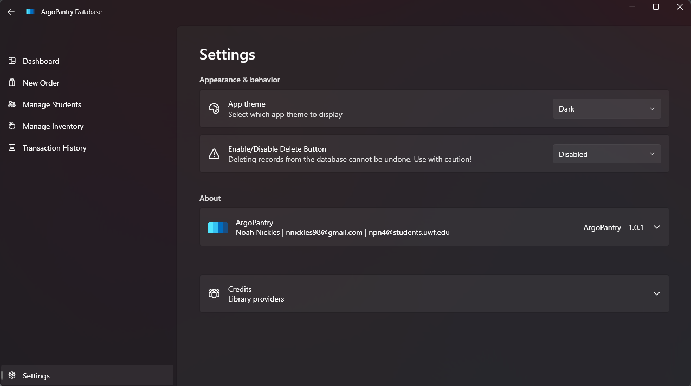

If the server can successfully find and send you the image, it will show up in the subsequent page.
IMAGE LINK: Click on this link for an image
NONEXISTANT LINK: Click here to test the non-existent link
POST REQUEST TEST: Test form submission
I work on campus as a Local Support Provider for the Division of Academic Engagement and Student Affairs. Tutoring and Learning Resources is one of the departments that we service. One of the staff members asked me if I could create a time management calculator for students as they were currently using another university's website. Wanting to practice my programming skills, I created this calculator in May 2024, but they have yet to see about getting it added to their deparment site. I figured I would take the opportunity to show off my work given we are allowed to modify the html files in this project.
I also created a client-only Windows 11 app in C# using WPF for the Dean of Student's food pantry; another department that we service. The app stores inventory information and transactions of items that students get, then stores the data in a local SQLite database. That was a fun project to work on, but it took me the entire month of August 2024 to complete. They just started using it this semester, so I am happy to see that it is being used.
